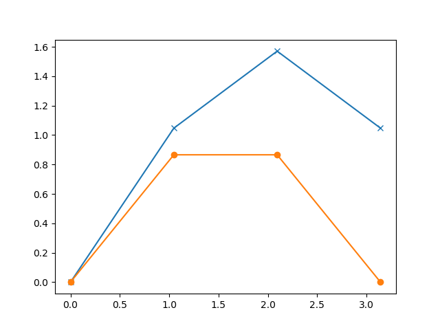
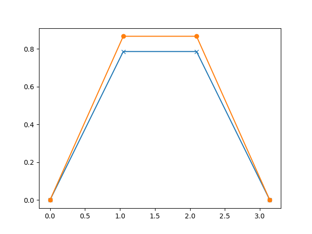
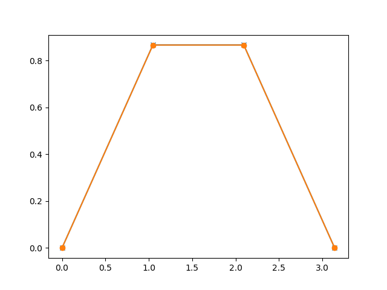
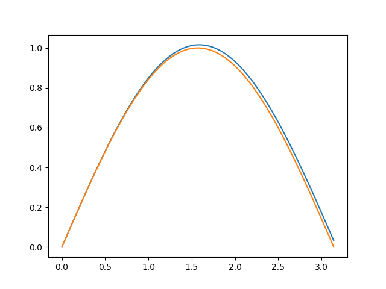
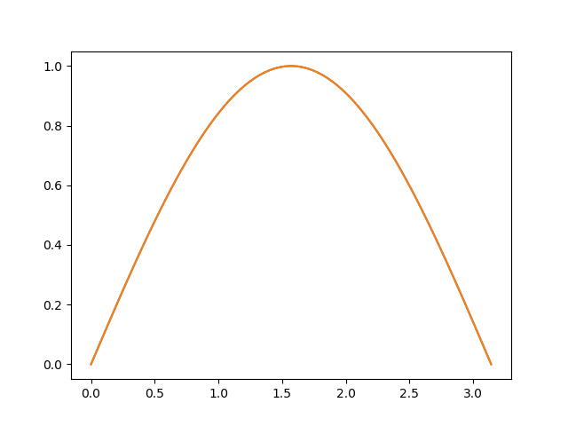

Differential equations are one of the most important mathematical tools used in producing models for physical and biological processes. Analytic solutions are available in some cases but numerical methods are employed for solving most of the problems encountered in science and engineering. Here we explore some of the popular methods for solving the initial value problems involving first-order ordinary differential equations(ODE). The focus will be on solving simple examples using Python programming language. The Python basics required for understanding the examples is given here.
Consider the differential equation,
(dy)/(dx) = f(x, y) with an initial value y(x0) = y0
The derivative of the function and the value of the function at some initial value are known. The objective is to find out the value of the function for other values of x, starting from the given initial point. The underlying idea of any routine for solving the initial value problem is to rewrite the dy and dx as finite steps Δx and Δx, to convert the differential equation to an algebraic equation.
y(xi + 1) = yi + Δy = yi + (Δy)/(Δx) × Δx = yi + (dy)/(dx) × Δx
In the limit of making Δx very small, a good approximation to the underlying differential equation is achieved. The process can be explained better with some examples. We choose a known function so that the error in the result can be easily checked.
import numpy as np import matplotlib.pyplot as plt def f1(x,y): # derivative of the function to be evaluated return np.cos(x) N = 4 # number of points h = np. pi/(N-1) # stepsize. Note that the Number of steps = Number of points -1 xa = np.zeros(N) # numpy array of store the variable values ya = np.zeros(N) # numpy array to store results xa[0] = 0.0 ya[0] = 0.0 def euler(x, y, fxy, h): return y + h * fxy(x,y) # Euler method for i in range(N-1): ya[i+1] = euler(xa[i], ya[i], f1, h) xa[i+1] = xa[i] + h print (xa[-1], ya[-1], 'Err = ', ya[-1] - np.sin(xa[-1])) # the last point and error plt.plot(xa, ya, 'x-') plt.plot(xa, np.sin(xa), '+-') plt.show()
The output of the code is shown above. We have deliberately selected a very large stepsize to show the error. The lower graph, marked with dots, are the correct values. The points marked with crosses are the outputs of the calculation. The reason for error is very clear. The Euler method which advances a solution from xi to xi + 1 is not symmetric, it advances the solution through an interval h, but uses derivative information only at the beginning of that interval.
Better results are obtained if we take trial step to the midpoint of the interval and use the value of both x and y at that point to compute the real step across the whole interval. This is called the second-order Runge-Kutta or the midpoint method. To learn about the theory refer to Runge-Kutta methods , Second order Runge-Kutta methods or any other good books on numerical methods.
import numpy as np import matplotlib.pyplot as plt def f1(x,y): # derivative of the function to be evaluated return np.cos(x) N = 4 # number of points h = np.pi/(N-1) # stepsize. Note that the Number of steps = Number of points -1 xa = np.zeros(N) # numpy array of store the variable values ya = np.zeros(N) # numpy array to store results xa[0] = 0.0 ya[0] = 0.0 def rk2(x, y, fxy, h): # x, y , f(x,y) k1 = fxy(x, y) k2 = fxy(x + h, h*k1) return y + h * ( k1/2 + k2/2) for i in range(N-1): ya[i+1] = rk2(xa[i], ya[i], f1, h) xa[i+1] = xa[i] + h print (xa[-1], ya[-1], 'Err = ', ya[-1] - np.sin(xa[-1])) plt.plot(xa, ya, 'x-') plt.plot(xa, np.sin(xa), 'o-') plt.show()
This procedure can be further extended to higher orders. The fourth order Runge-Kutta method is the most popular one and is commonly referred as the Runge-Kutta method. In each step the derivative is evaluated four times as shown in figure below. Once at the initial point, twice at trial midpoints, and once at a trial endpoint. Every trial evaluation uses the value of the function from the previous trial point, ie. k2 is evaluated using k1 and not using yi. From these derivatives the final function value is calculated.
import numpy as np import matplotlib.pyplot as plt def f1(x,y): # derivative of the function to be evaluated return np.cos(x) N = 4 # number of points h = np.pi/(N-1) # stepsize. Note that the Number of steps = Number of points -1 xa = np.zeros(N) # numpy array of store the variable values ya = np.zeros(N) # numpy array to store results xa[0] = 0.0 ya[0] = 0.0 def rk4(x, y, fxy, h): # x, y , f(x,y) k1 = h * fxy(x, y) k2 = h * fxy(x + h/2.0, y+k1/2) k3 = h * fxy(x + h/2.0, y+k2/2) k4 = h * fxy(x + h, y+k3) return y + ( k1/6 + k2/3 + k3/3 + k4/6 ) for i in range(N-1): ya[i+1] = rk4(xa[i], ya[i], f1, h) xa[i+1] = xa[i] + h print (xa[-1], ya[-1], 'Err = ', ya[-1] - np.sin(xa[-1])) plt.plot(xa, ya, 'x-') plt.plot(xa, np.sin(xa), 'o-') plt.show()
The reduction is error is clearly visible. We have used very coarse steps to highlight the error. You may change the value of 'N' in the code and rerun. Outputs for N=100 are shown below. Also change the code to remove the marking of points.
 As we explained earlier, the error is due to the fact that the value of the derivative is not the same everywhere. This can be demonstrated by choosing a function representing a straight line, as shown in the example below.
import numpy as np import matplotlib.pyplot as plt def f1(x,y): # derivative of the function to be evaluated return 4 N = 4 # number of points h = np.pi/(N-1) # stepsize. Note that the Number of steps = Number of points -1 xa = np.zeros(N) # numpy array of store the variable values ya = np.zeros(N) # numpy array to store results xa[0] = 0.0 ya[0] = 0.0 def euler(x, y, fxy, h): return y + h * fxy(x,y) # Euler method for i in range(N-1): ya[i+1] = euler(xa[i], ya[i], f1, h) xa[i+1] = xa[i] + h print (xa[-1], ya[-1], 'Err = ', ya[-1] - 4*xa[-1]) plt.plot(xa, ya, 'x') plt.plot(xa, 4*xa, '+') plt.show()